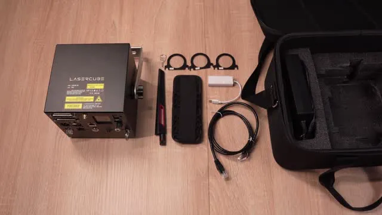
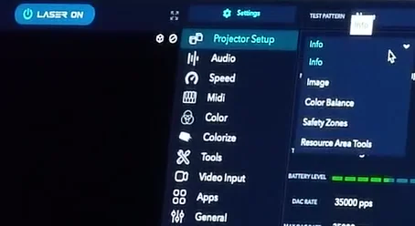
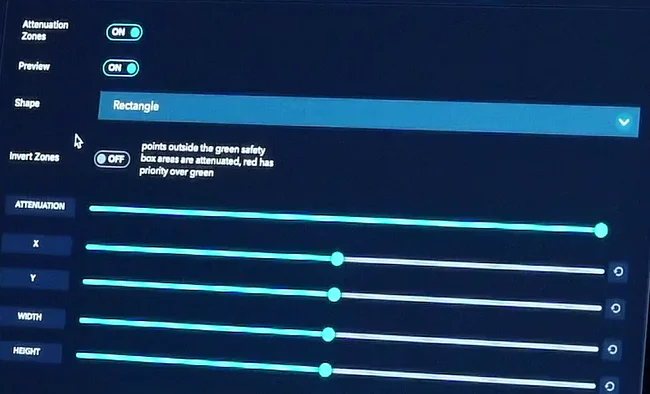

LaserCube Academy · Beginner
Start here: from the box to your first safe show
Ten short lessons for new LaserCube Ultra MK2 and Pro owners: why laser light is dangerous, a safe setup, the key, E‑Stop and safety zones, LaserOS and a checklist for every show. Pass the final quiz and download your certificate.
Course contents0 of 10 lessons done
The questions, the final quiz and the certificate need JavaScript. Without it you can still read every lesson below.
Before you start
How this course works
This course takes you from a new LaserCube to a safe first show. Most of it is about safety. The LaserCube is a Class 4 laser, the highest laser class: its beam can blind someone in an instant, even scattered light from it can injure eyes and skin, and it can start fires.
By the end you can
- say why a laser beam is dangerous even far from the cube;
- plan a room so every beam ends somewhere safe, at least 3 m above people;
- start your cube with the key and the jumper or E‑Stop, and stop it at once;
- set the beam block and a safety zone;
- act fast if a beam hits someone or the cube is damaged.
How the lessons work
- Each lesson takes about 5 minutes, plus its video. It has the key points and a few questions, and most have a video or pictures. Get a question wrong? Pick another answer.
- Your progress is saved in this browser. There’s no account and nothing is sent to us. Clearing your browser data, or switching to another device, starts the course again.
- When all ten lessons are done, take the final quiz: 10 questions, 8 right to pass, as many tries as you need.
- Pass, then download your certificate as a PDF or an image.
The LaserCube manual says the cube must only be operated by people trained in laser safety. This course teaches the basics. It doesn’t replace full laser safety training, or a Laser Safety Officer (LSO, a person trained to supervise laser shows) where your local rules require one.
Sources: the LaserCube Ultra MK2 & Pro manual, and X‑Laser’s Laser Operator Basics Course, used with permission. X‑Laser is LaserCube’s authorised distributor in the USA.
Completed
Lesson 1 of 10
Know your LaserCube
Before you switch anything on, learn what the parts of your cube do. Most of them are there for safety.

The parts that keep the beam safe
The numbers are the ones in the manual’s pictures below.
- Laser aperture (1): the window the laser light comes out of.
- Beam block (2): blocks the beam and stops it from scanning into the audience. The screws on either side lock it.
- Safety key (7): stops the laser from being switched on by accident. After a power loss, or when the interlock is opened and closed again, the key has to be reset.
- E‑STOP (interlock) ports (8): two network‑style (RJ45) sockets for the safety shut‑off. The safety jumper or an E‑Stop plugs in here. Never plug network (Ethernet) devices into them.
- Interlock: the safety shut‑off circuit through those ports. The laser can only emit while it is closed by the safety jumper or an E‑Stop; if it opens, the laser stops.
- EMISSION LEDs (9): when they’re lit, the laser can emit. It may or may not be emitting right now; either way, nothing is stopping it. Never cover them.
- Safety eye bolt (23): when the cube is mounted up high, a safety cable goes through it.
- Mounting bracket (3): for a secure installation. The screws (3a) lock the tilt.


The rest of the back panel
- Power switch (10) and power LED (11)
- 19V DC power input (12) and its charging LED (13): red while charging, green when full
- LCD (15) and rotary knob (14) for CubeOS, the cube’s own menus
- Network (LAN) port (6), the status LED (5) that shows the connection mode, and the WiFi antenna connector (4)
- USB port (16) for a MIDI controller, and the microSD card slot (17)
- Internal microphone (18) and audio in (19) for the built‑in visualisers, and audio out (20)
- ILDA ports (21) and DMX in and out (22): these are for show controllers, and this course doesn’t need them
The label
The label on your cube shows its model and laser power, and the warning CLASS 4 LASER PRODUCT. Keep every factory label on the cube and readable: they are required for legal compliance.
Check yourself
In the manual: Parts diagram·Product labelling
Lesson complete. On to lesson 2.
Completed
Lesson 2 of 10
Why laser light is different
A laser beam isn’t just bright light. This lesson explains why it can hurt someone when a much stronger stage light can’t.
The beam hardly spreads
Even a narrow stage light fans out by about half a degree. A laser beam can fan out by as little as 0.03 degrees, so it is still a tight spot full of energy long after it has left the cube.
Power on a tiny spot: irradiance
Irradiance is how much power lands on each small patch of the spot: the smaller the spot, the higher the irradiance. Picture three lights that all use 20 watts. As an old filament bulb, 20 W makes a dim lamp. As an LED stage light, it makes a bright effect. As a laser, 20 W is an arena‑class projector. The power is identical; what changes is how tightly the light is squeezed together.
A beam that stands still is the most dangerous
Your LaserCube draws shapes by sweeping one beam very fast with tiny mirrors (scanners), and your eye blends the moving dot into a picture. Sweeping doesn’t make the beam any weaker: it only shortens the time it stays on each spot. A single beam held still puts all its power on one spot for as long as it stays there, which makes it the riskiest output a laser has. A moving beam can still injure an eye.
What it can do
- Eyes: in the dark your pupil opens to about 7 mm, wide enough for a whole beam to get in. The eye then focuses it onto the retina, the light‑sensing layer at the back of the eye. One accidental exposure can cause instant, permanent blindness.
- Skin: a high‑power beam can cause burns.
- Fire: lasers can set things alight a long way from the cube. Shine a 2 W flashlight (torch) at a candle and the wick doesn’t light; hold a 2 W laser beam on it and it catches.
- Aircraft: a beam lights up a cockpit window and can distract a pilot or leave them briefly blinded, even many miles away.
- Cameras and video projectors: a beam can badly damage them, the same way it can damage an eye for good.
Check yourself
Put these 20‑watt lights in order, from lowest to highest irradiance.
- Light bulb
- LED stage light
- Laser
All three use the same power; the laser squeezes it into the smallest spot, so its irradiance is far higher.
Lesson complete. On to lesson 3.
Completed
Lesson 3 of 10
The safety rules
These are the rules that matter most, from the manual and X‑Laser’s operator course. Every later lesson builds on them.
Avoid eye or skin exposure to direct or scattered radiation. Eye exposure can cause instant injury and permanent blindness.
Never at people
- Never aim the laser at people, vehicles or shiny, reflective objects, and never let a beam be reflected toward people. Reflected (scattered) light can injure eyes too. The aperture label on the cube reads: do not aim the laser at people, vehicles or open airspace.
- Never scan the audience. The LaserCube is not made for audience scanning, whatever the setup.
- Don’t stand in front of the cube while it’s on. Wear laser safety glasses while rigging, maintaining or otherwise working with it.
Keep beams 3 metres above people
Wherever people may be, every beam must stay at least 3 metres (10 feet) above the floor, measured from the highest place someone could stand: a raised floor, a stage, a balcony.
Split every venue into two kinds of area:
- Safe areas: where people are. No laser light may reach them, directly or reflected.
- Restricted areas: where nobody may be. Every beam has to end in one.
Keep a buffer of at least 3 metres between them on all sides.

Fire, aircraft and who may use it
- Lasers can start fires at great distances. Don’t use the cube near flammable materials.
- Never let a beam hit an aircraft or go into the open sky. In the US, shining a laser at an aircraft is a federal crime punishable by fines or jail.
- The LaserCube is not a toy. Keep it away from children and from anyone not trained to use it, before, during and after a show.
- Never leave a running laser unattended, even with other crew around.
- Don’t use the cube if you think it’s damaged or faulty, and never open or modify it. Email support@laseros.com instead.
- The only maintenance allowed: cleaning the aperture window with a dry tissue that leaves no lint, and blowing dust out of the vents with compressed air (the manual also allows an alcohol prep wipe), with the cube switched off and the key out. Let any alcohol dry completely before you switch the laser on.
Check yourself
In the manual: Safety warning·Safety guidelines
Lesson complete. On to lesson 4.
Completed
Lesson 4 of 10
Plan the projection area
Before you switch on, look at the room. Every beam has to end somewhere safe, and nothing it can reach should be a person, a reflection, a camera or anything that can burn.
Every beam must end on something
Laser beams travel a long way, so plan where each one stops: on a solid surface that doesn’t reflect and doesn’t burn.
Good places for beams to end
- A concrete or brick wall
- A projection screen
- Heavy fabric that light can’t pass through and that won’t catch fire (flame‑retardant)
- The cube’s own beam block
Never
- Mirrors, windows and glass
- Chandeliers, mirror balls, chrome, glossy panels
- Trees and bushes
- Roads, cars and other vehicles
- The open sky
Look for hazards
- Reflections: mirrors, glass, polished metal, mirror balls.
- Things that burn: curtains and fabric that aren’t flame‑retardant, decorations, and any pyrotechnics. Keep them out of the beam area.
- Lenses: cameras and video projectors. A beam can badly damage them, so keep beams away from them (lesson 8 shows how).
- Fog and haze: a fog or smoke machine makes laser light scatter in the air, as the manual’s 3 m drawing warns. Scattered light can injure eyes too.
- Height: find the highest place anyone can stand, such as a stage, a raised floor or a balcony, and keep beams 3 m above it.
Watch the whole area
For the whole show, someone who can stop the laser must have every beam, and every spot where a beam lands, in sight. If part of the room is out of your view, for example where beams land behind your position, put a second person there who can get the laser stopped at once. If anyone gets near the beams, say someone climbing onto a speaker, stop the laser straight away.
Outdoors
Beams must still end on something: a building, a screen, a wall. Never point them into the open sky or at vehicles: the cube’s own label says so.
Rain: the Ultra MK2 and Pro are rated IP51, or IP63 with the rain cover fitted (ratings for how well the cube is sealed against dust and water). Light rain is OK only with the rain cover on; never run the cube in heavy rain.
Check yourself
Lesson complete. On to lesson 5.
Completed
Lesson 5 of 10
Mount it and put up signs
Where the cube sits decides where its beams can go. Mount it so it can’t move, then put up warning signs. You set the beam block in lesson 8, once you know how to start and stop the laser.
Mount it so it can’t move
- Secure the cube before you use it, so the beam can’t shift by accident. Lock the tilt with the screws on the bracket.
- On a truss or stand, pick a clamp whose rating covers the cube’s weight, and tighten it until neither gravity nor speaker vibration can tip the cube’s angle.
- For any rigging overhead, run a safety cable through the safety eye bolt.
- Handle it as precision equipment: some parts are fragile, so protect it from knocks and drops.
- Leave open space on all sides so air can flow through the heat sink underneath.
- Run it only between 10 °C (50 °F) and 40 °C (104 °F). Outside that range the output can get weak, too strong or swing, and the manual says extreme heat or cold will damage the laser diodes.
Put up warning signs
Place laser warning signs in and around the venue, especially where the audience can go. The manual asks for signs that meet the ANSI standard (the American National Standards Institute’s).

Check yourself
In the manual: Hardware installation·Safety guidelines
Lesson complete. On to lesson 6.
Completed
Lesson 6 of 10
Key, interlock and E‑Stop
The laser only emits when the interlock is closed and the key is on. Learn how to stop it before you ever start it.
Turn the key to OFF, or press the big red button on the E‑Stop. Pulling out the charger is not a way to stop: the Ultra MK2 and Pro keep running on their battery.

In the video, “make sure the red button is depressed” means the red button must be up (released), as in the E‑Stop steps below.
Outside the US: the safety jumper
- Plug the safety jumper into one of the two E‑STOP ports.
- Insert the safety key and turn it from OFF to ON. The EMISSION LEDs light up: the cube can now emit laser light.
- To stop emission, turn the key from ON to OFF and take it out.

Outside the US the E‑Stop is optional. If you connect one (the STADIUM bundle comes with it), start the laser with it as in the steps below: red button up, then the green START. If your E‑Stop has no key, skip the step with the pendant key.
With an E‑Stop (required in the US)
US cubes come without the jumper. They must run with the E‑Stop that comes with them (an FDA requirement), and the laser won’t work without it.
- Connect the E‑Stop pendant to the cube.
- Turn the key on the cube to ON.
- If the red STOP button is pushed in, turn it clockwise until you can pull it up.
- Turn the key on the pendant clockwise to ON (if it has one). The EMISSION LEDs flash slowly, once every 3 seconds.
- After the second flash, briefly press the green START button. The LEDs flash once a second; after 10 seconds they stay on and the laser can emit.


In the video, “depressed” means the red button is up, and he holds the green START button for a second: a brief press is enough (step 5 above).
Always have two ways to stop
Set up every show so you have a main and a backup way to stop the laser instantly, and keep both within reach: for example the E‑Stop and the key, or without an E‑Stop the key and the power switch. Before the show, check that they really stop it.
When the cube has lost power (switched off, or a flat battery), or after the interlock has been opened and closed again, the laser won’t start by itself. Reset the key first (turn it to OFF, then back to ON), and with an E‑Stop connected, do the E‑Stop start again. That’s on purpose, so a cube never fires the moment power comes back.
Playlist mode, on any cube: if the cube is in Playlist control mode, it starts the last playlist as soon as the interlock is enabled (“Power‑On Play” is on by default). If you don’t want that, set Power‑On Play to Disabled in the playlist options menu.
Check yourself
Put the US E‑Stop start‑up in the order the manual gives.
- Connect the E‑Stop pendant to the cube
- Turn the key on the cube to ON
- Raise the red STOP button (turn it clockwise)
- Turn the key on the pendant to ON
- After the second slow flash, press START briefly
After START the LEDs flash faster, then stay on after 10 seconds: the laser can now emit.
In the manual: E‑Stop / interlock·E‑Stop setup guide
Lesson complete. On to lesson 7.
Completed
Lesson 7 of 10
Switch on and connect LaserOS
Now switch the cube on, find your way around CubeOS on its screen, and connect LaserOS.

Filmed on firmware 1.20, so two things are missing from its menus: Preview in the main menu, and Language in Settings. Both came with firmware 2.0.
Power and CubeOS
- Charge through the 19V DC input. The charging LED is red while charging and green when full.
- Turn the cube on with the power switch. The LCD shows CubeOS: turn and push the rotary knob to move through the menus.
- The status bar at the bottom of the screen shows important messages and warnings.
Connect LaserOS over WiFi
- Make sure the supplied WiFi antenna is connected: the manual says to do this before using any wireless mode.
- On the cube, choose Control Mode → LaserOS.
- Choose Settings → Connection → WiFi Server. On firmware older than 2.1, changing the connection mode restarts the cube: select YES and push the knob. Firmware 2.1 and later switch without a restart.
- On your phone or computer, join the cube’s WiFi. By default it’s called LaserCube and the password is Laser2020. You can change both under Settings → Network → WiFi Server.


- Open LaserOS. It finds the connected cube: on a computer, the Laser button at the top left then reads LASER OFF, with a red power symbol. If it reads NO LASER, LaserOS hasn’t found the cube: close LaserOS, connect the cube, then start LaserOS again.
- Set the beam block first, so no beam can scan into an audience area: lesson 8 shows how.
- With the interlock closed and the key on (lesson 6: jumper in and key on, or with an E‑Stop the E‑Stop start done), click the Laser button: it reads LASER ON. Click it again, or press Esc, to stop. In the phone app, use the power button in the middle of the bottom bar: red when the projection is off, blue when it’s on. If the cube isn’t armed, LaserOS shows the message “Interlock is not enabled on cube”.


In the video, the green START button is held for a second: a brief press is enough (lesson 6).
When WiFi isn’t good enough
- Use the WiFi Scan button in the WiFi Server settings to see how busy the 2.4GHz channels are. If they’re congested, use a cable.
- For several cubes, or where WiFi is busy, the manual recommends a network cable in LAN Client mode (the cube joins your network through the cable). If nothing on the network hands out addresses (no router), the cube gives itself an address starting 169.254 after about 20 seconds. For one computer on a direct cable, the manual suggests LAN Server mode.
- Get LaserOS for Windows or Mac from laseros.com. The phone apps stream to the cube; putting content on its SD card needs the computer version.

Filmed on firmware older than 2.1. On firmware 2.1 and later, changing the connection mode doesn’t restart the cube.
Check yourself
Put the steps for your first WiFi stream in the order the manual gives.
- Turn the cube on
- Choose Control Mode → LaserOS
- Choose Settings → Connection → WiFi Server
- Join the LaserCube WiFi on your phone or computer
- Open LaserOS and turn the laser on
Connect your device to the cube first; LaserOS then finds it. Before the laser goes on, the beam block must be set (lesson 8) and the interlock ready (lesson 6).
In the manual: LaserOS control mode·The Laser button·Connection settings
Lesson complete. On to lesson 8.
Completed
Lesson 8 of 10
Beam block and safety zones
Now that you can start and stop the laser, set the beam block, then add a safety zone. A zone works on top of the beam block and the 3 m rule, never instead of them.
Set the beam block
The beam block is your hard stop: whatever the software does, the beam can’t get past it. Set it like this:
- Switch the cube off and take the key out.
- Aim the cube and lock it in place.
- Adjust the beam block, then lock it with the screws on either side.
- Switch on and project a full‑size test image at low brightness: the RGB‑THold test pattern (Settings → Projection → Test Patterns) draws a border round the projection area. Its size follows the Image Setup sliders, so check with the image at full size. Stand beside or behind the cube, never in front of it, and look where the beams go.
- Repeat until no beam can scan into any audience area, and every beam stays at least 3 m (10 ft) above people.
If the built‑in block can’t mask an angle you need, fix a piece of black foil (cinefoil) to the cube at the edge of the aperture, clear of the vents. Gaffer tape on its own is no beam block: a laser cuts right through it.
Keep‑within and keep‑out zones
The video below cuts a zone around a face drawn on a box and calls it “absolutely safe”. It isn’t: a zone never makes it safe to aim at people. Never aim a LaserCube at people, zone or not.

- A keep‑within zone (the default) marks where beams may go; beams outside it are reduced. Its preview outline is green. Use it for the target area where beams can safely end.
- Invert it and it becomes a keep‑out zone: beams inside it are reduced, and its preview outline is red. Use it to keep beams off something, such as a camera or a video projector.
- Attenuation is how much a beam’s power is cut outside a keep‑within zone, or inside a keep‑out zone: 100% blanks it completely; 90% cuts it to 10% of its normal power.
- Preview projects the zone’s outline, so you can see where it is (the interlock must be closed and the key on).


Which zone applies
In LaserOS control mode (lesson 7), LaserOS handles the safety zone, so the cube greys out its own Safety Zone entry. In the cube’s own modes, such as Visualizer or Playlist, the zone set on the cube applies.
Set a zone in LaserOS
On a computer, open Settings → Projector Setup and choose Safety Zones in the drop‑down at the top. In the phone app, tap the gear at the top right, then Safety Zone on the Projector Setup page: it has the same switches and sliders.
- Attenuation Zones switches the zones on, so turn it on.
- Preview projects the zones’ outline.
- Shape: Rectangle, Ellipse, Triangle, Diamond or one of four corners.
- Invert Zones off makes a keep‑within zone (green outline); on makes a keep‑out zone (red outline).
- Attenuation sets how much beams are reduced. X and Y place the zone, and Width and Height size it.
- Add makes another zone. Where zones overlap, red has priority over green.


Set a zone on the cube
In the cube’s own modes, go to Settings → Projection → Safety Zone.
- Switch on Enabled to use the zone, and Preview to project its outline.
- Shape: Rectangle, Circle or Ellipse. Sliders set its size and position.
- Invert makes it a keep‑out zone. Attenuation works as above.


Check yourself
Put the beam block steps in the right order.
- Switch the cube off and take the key out
- Aim the cube and lock it in place
- Adjust and lock the beam block
- Switch on and check where the beams go
- Repeat until no beam reaches the audience
Adjust with the power off and the key out, then check with the power on, from beside or behind the cube. Repeat until nothing scans into the audience.
In the manual: Hardware installation·Test patterns·Safety zone·Safety zones in LaserOS·Projection settings
Lesson complete. On to lesson 9.
Completed
Lesson 9 of 10
If something goes wrong
Know what to do before you need it: if a beam hits someone, if the cube is damaged, and which rules apply where you are.
If a beam hits someone
- Stop the laser with the E‑Stop or the key.
- Get medical help right away. For any beam in the eye, see a doctor straight away, even if it seems fine.
- Note it all down while it’s fresh. Take photos of the room and of where the cube stood. Write down which cube it was and what was playing (colours and pattern), how far the person was from the cube, about how long the beam hit them, and the date and time.
- Email support@laseros.com with those details.
In the US: also tell X‑Laser (info@x-laser.com). An accidental exposure can be reported to the FDA on its form 3649.
If the cube is damaged
- If you think it’s damaged or faulty, don’t use it, and never open it. Email support@laseros.com.
- If it gives off smoke or any smell: switch it off and unplug it right away, keep it away from anything flammable, don’t charge or use it again, and email support@laseros.com.
The law where you are
It’s your job to know the rules where you use the cube. Laws vary: some places need extra licensing or registration, and many only allow laser shows under the supervision of a trained Laser Safety Officer (LSO).
In the US: an FDA variance is required to operate a LaserCube. A LaserCube bought in the USA comes with this variance, issued by X‑Laser. For details, such as a copy for a venue, ask X‑Laser.
If you see a laser show that looks unsafe, tell the venue, the company running it, and the authority that oversees laser shows where you are (in the US: the FDA and your state’s laser agency).
Check yourself
A beam has hit someone in the eye. Put the steps in order.
- Stop the laser
- Get them to a doctor right away
- Write down what happened and take photos
- Email support@laseros.com
Stop the laser and get medical help first; the details and the email come after.
In the manual: Safety guidelines (11, 12, 17)
Lesson complete. On to lesson 10.
Completed
Lesson 10 of 10
Before every show
Run through this list before every show. It’s everything from the earlier lessons, in the order you’ll need it.
Pre‑show checklist
LaserCube Academy · wiki.laseros.com/academy/start-here/
Would you run this show?
Eight situations. Anything a situation doesn’t mention is done as the pre‑show checklist says. Decide, then read why.
A house party. The cube sits on a table at chest height and sweeps beams across the room where people are dancing.
Beams must stay at least 3 m above people, and the LaserCube is never for audience scanning. Mount it higher and set the beam block first.
How high are the beams, and who is in their path?
A club. The cube is clamped to a truss with a safety cable, and the beam block keeps every beam at least 3 m above the highest place anyone can stand, the DJ riser included. Beams end on a concrete wall, signs are up, you can see every beam, the E‑Stop is in your hand, a backup way to stop is tested and within reach, and you’ve checked the local rules.
Secured, cabled, beams 3 m above the highest place people stand and ending on a safe surface, signs up, every beam in view, a main and a backup way to stop within reach, and the rules checked. That’s a safe setup.
Go through the checklist: mounting, height, where beams end, signs, watching, ways to stop, local rules. Is anything missing?
A garden party at night. The cube is clamped to a stand with a safety cable, signs are up and you hold the E‑Stop. For big beams, you point them straight up into the open sky, where there are no planes in sight.
Never let beams go into the open sky: they can dazzle or blind pilots miles away. Beams must end on something solid.
Where do these beams end?
An outdoor show in a courtyard, in light drizzle. The rain cover is on, and every beam ends on a brick wall with no windows.
Light rain is OK with the rain cover fitted (IP63), and a brick wall with no windows is solid and doesn’t reflect. With the rest of the checklist done, that’s a safe setup.
Light rain is OK with the rain cover on. Is anything else in this situation unsafe?
A friend’s 12‑year‑old asks to run the show from LaserOS on their phone while you get a drink.
Keep the cube away from children and anyone untrained, and never leave a running laser unattended.
Who would be at the controls, and who would be watching the laser?
A small theatre. From your desk you can’t see where the beams land on the back wall, so a second person watches it and can get the laser stopped at once.
Every beam and every spot where one lands must be in view of someone who can get the laser stopped. A second person on the back wall covers what you can’t see. With the rest of the checklist done, that’s a safe setup.
Is every spot where a beam lands watched by someone who can get the laser stopped?
Your cube fell off a table yesterday. It still switches on, but something rattles inside.
Don’t use a cube you think is damaged, and never open it. Email support@laseros.com.
Could the cube be damaged?
A conference hall. The cube hangs 4 m up on a truss with a safety cable, and the beam block keeps every beam at least 3 m above the highest place anyone can stand. The beams end on a projection screen, signs are up and you can see every beam. Your plan for stopping the laser is to pull out its charger.
The Ultra MK2 and Pro keep running on their battery, so pulling the charger doesn’t stop the laser. You need a main and a backup way to stop.
Does pulling the charger stop an Ultra MK2 or Pro?
Lesson complete. Next: the final quiz.
Final quiz
Final quiz
10 questions picked at random, one from each of the course’s 10 topics. Get 8 right to pass. You can try as many times as you like.
Finish all ten lessons first. Still to do:
Certificate
Your certificate
Pass the final quiz to get your certificate. Go to the final quiz
Well done. Type your name as you want it on the certificate.
Your certificate is made right here in your browser. Your name isn’t sent anywhere; it’s only kept in this browser.

Download not starting? Press and hold the certificate (on a computer, right-click it) and save the image.
This is a certificate of completion. It is not a licence, a Laser Safety Officer (LSO) qualification or permission to run public laser shows. Keep the pre‑show checklist handy.
Next course: LaserOS basics: your logo, text and effects, to make your own content look good in LaserOS.